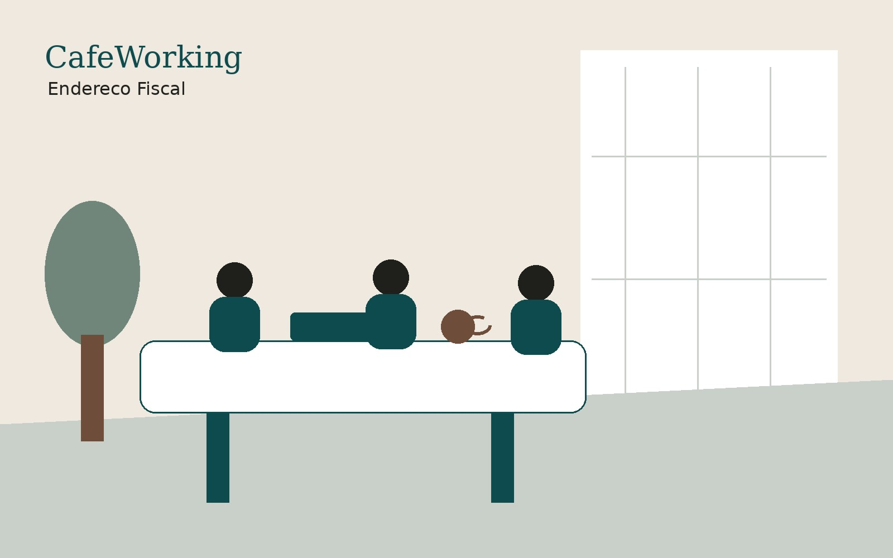

Unidade Luxemburgo
Rua Guaicuí, 715. Fachada, recepção, cafeteria, jardim, salas privativas e áreas comuns.
Conhecer Luxemburgo →Coworking, cafeteria e ambientes premium na Rua Guaicuí, 715, no Luxemburgo. Salas privativas, salas de reunião por hora, endereço fiscal e abertura de empresa, com preços no site e contratação online.

Mais do que infraestrutura, o CafeWorking entrega um ambiente profissional, acolhedor e conectado a soluções empresariais do Grupo Ciatos.
Ambientes reais do CafeWorking, organizados para trabalho, reuniões, atendimento, eventos e relacionamento empresarial.


Coworking, cafeteria e salas no Luxemburgo. Endereço fiscal também no Estoril, na Av. Raja Gabaglia.
Rua Guaicuí, 715. Fachada, recepção, cafeteria, jardim, salas privativas e áreas comuns.
Conhecer Luxemburgo →
Av. Raja Gabaglia, 2000. Endereço para o CNPJ e recebimento de correspondências.
Ver endereço fiscal no Estoril →
Um ambiente acolhedor para pausas, encontros, reuniões informais e conexões.
Ver cafeteria →O cliente percebe cuidado, estrutura e profissionalismo antes mesmo da reunião começar. É o mesmo motivo pelo qual muita empresa contrata aqui o endereço fiscal em Belo Horizonte antes de precisar de uma sala.